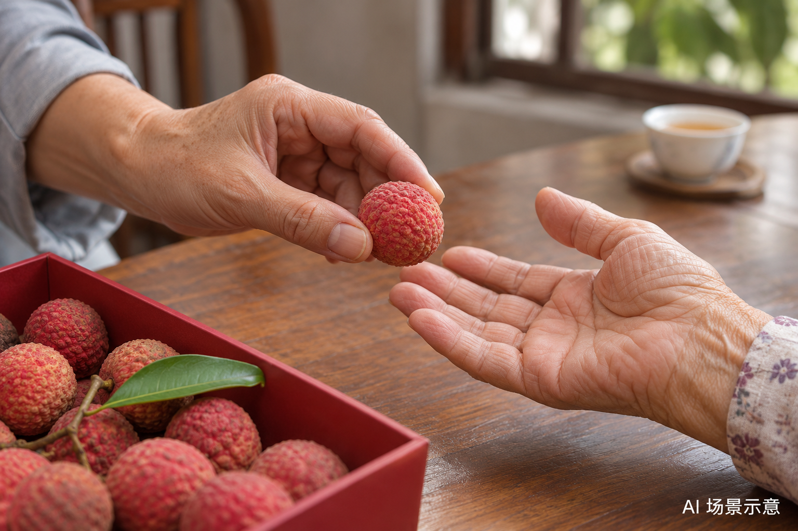

广州增城 · 鲜果礼盒
仙进奉礼盒
2027 年 7 月产季 · 课堂模拟
广州增城发货
寄送安排
鲜果运输时间自快递揽收起计。选收货地区，查看对应线路。
产季线路参考 · 课堂模拟查看全部线路
- 广州及珠三角主要城区
- 当日或次日，当日达限早班
- 省外生鲜专线城市
- 1–2 天
- 其他内地可寄地区
- 2–3 天
- 偏远县镇、海岛及港澳台
- 按地址查询


长健与果园
来自岭南的
一味晚熟鲜荔
仙进奉是广州增城的晚熟荔枝品种。果肉清甜，带淡淡蜜香。翻开礼盒前，先看它挂在枝头的模样。
枝头与园景均为项目实拍。礼赠场合
这份荔礼，送给谁？
先看开盒实拍，再把收货日与登门日期排在一起。
带上这个问题去咨询 →礼盒咨询
送礼前，再问一句
把礼盒、用途和收货安排写成一份咨询清单。
收到荔枝后怎么保存？
及时检查果况，冷藏保存并尽早食用。以实际商品的保存说明为准。
照片能判断净重和果数吗？
包装实拍用于看盒型与摆放。课堂选盒请以规格栏的果品净重为准。
在哪里确认实际购买渠道？
原项目提及微信小程序和京东。正式商品入口、当期报价与供货情况可向长健农业电话咨询。